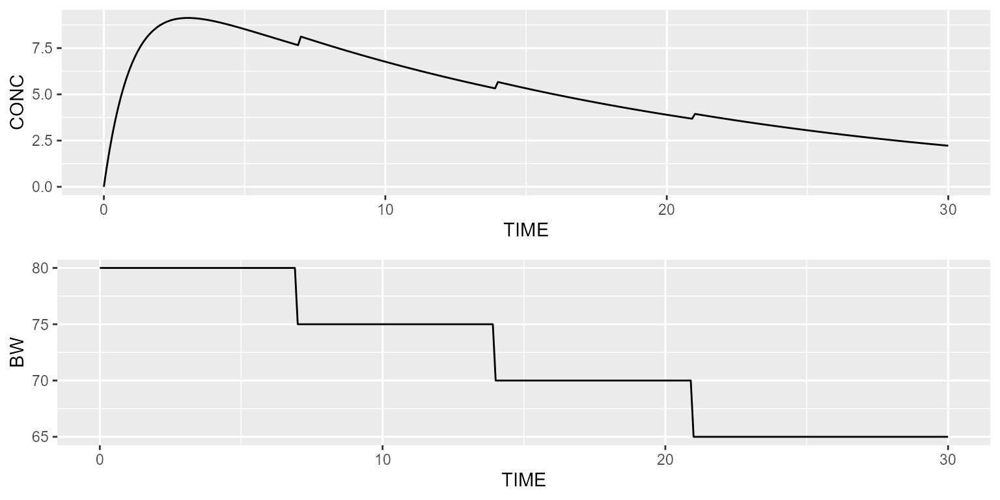
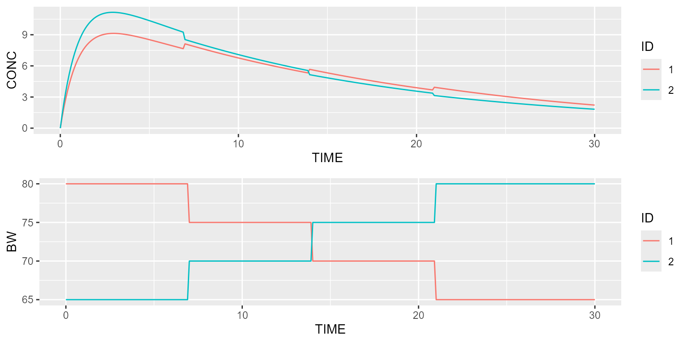

vignettes/v12_time_varying_covariates.Rmd
v12_time_varying_covariates.RmdThis vignette shows how time-varying covariates can be implemented.
As a demonstration example, let’s implement allometric scaling on the clearance and volume of a 1-compartment PK model:
model <- model_library$advan2_trans2
model <- model %>% replace(Equation("CL", "THETA_CL*exp(ETA_CL)*pow(BW/70, 0.75)"))
model <- model %>% replace(Equation("V", "THETA_V*exp(ETA_V)*BW/70"))Assume our drug is given once a month and BW varies over time. A time-varying covariate can be added to the dataset as follows:
dataset <- Dataset(1) %>%
add(Bolus(time=0, amount=1000)) %>%
add(Observations(times=seq(0,30,by=0.1))) %>%
add(TimeVaryingCovariate("BW", data.frame(TIME=c(0,7,14,21), VALUE=c(80,75,70,65))))The typical profile can be simulated in the following way:
results <- model %>% disable("IIV") %>% simulate(dataset, seed=1, outvars="BW")
gridExtra::grid.arrange(spaghettiPlot(results, "CP"),
spaghettiPlot(results, "BW"), ncol=1)
Let’s now compare this profile with another typical individual having a constant body weight of 70 kg:
scenarios <- Scenarios() %>%
add(Scenario("BW as time-varying covarite")) %>%
add(Scenario("Fixed BW", dataset=~.x %>% replace(Covariate("BW", 70))))
results <- model %>% disable("IIV") %>% simulate(dataset, seed=1, outvars="BW", scenarios=scenarios)
gridExtra::grid.arrange(spaghettiPlot(results, "CP", "SCENARIO"),
spaghettiPlot(results, "BW", "SCENARIO"), ncol=1)Finally, time-varying covariates can also be individualised by specifying an ID column:
dataset <- Dataset(2) %>%
add(Bolus(time=0, amount=1000)) %>%
add(Observations(times=seq(0,30,by=0.1))) %>%
add(TimeVaryingCovariate("BW", data.frame(ID=c(rep(1, 4), rep(2, 4)),
TIME=c(0,7,14,21, 0,7,14,21),
VALUE=c(80,75,70,65, 65,70,75,80))))
results <- model %>% disable("IIV") %>% simulate(dataset, seed=1, outvars="BW")
gridExtra::grid.arrange(spaghettiPlot(results, "CP", "ID"),
spaghettiPlot(results, "BW", "ID"), ncol=1)